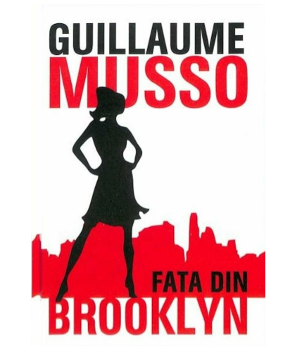
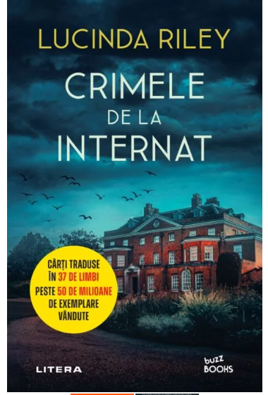
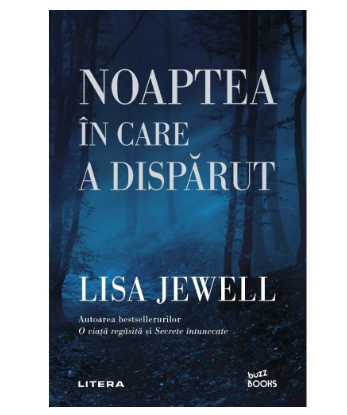
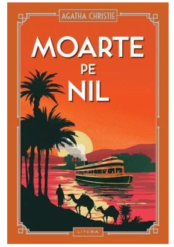

Fata din Brooklyn - Guillaume Musso
Fata din tren este un thriller construit în jurul vieții a doi oameni care ar trebui să se căsătorească în trei săptămâni, dar o serie de evenimente nefericite rup povestea lor frumoasă și îi despart pentru o vreme.Raphael, un cunoscut autor francez și tată singur, și Anna, un medic de succes cu multe scopuri, sunt personajele din primul capitol.
Într-o zi, în timp ce se bucură de o vacanță minunată împreună, el descoperă că Anna este chinuită de anumite secrete. El o constrânge să-i spună adevărul, dar se pare că nu este încă pregătit să-l audă. Drept urmare, iese în grabă din cameră, îngrozit de ceea ce tocmai a văzut. El se întoarce pentru a afla mai multe, năpădit de vinovăție, dar Anna nu se găsește nicăieri — nici acasă, nici în restaurant.
Raphael ia decizia să o caute și solicită ajutorul polițistului pensionar Marc, un prieten apropiat al lui. Ei pornesc într-o călătorie plină de șocuri, conspirații, crime și minciuni, aflând tot mai multe fapte despre fata pe care o cunoșteau drept Anna pe parcurs. Dar ei descoperă în timpul anchetei că ea merge de fapt pe lângă altcineva decât Anna. Care este povestea reală din spatele acestei fete enigmatice? Vor reuși să-l localizeze? Vor reuși Anna și Raphael să pună capăt relației lor secrete odată pentru totdeauna? Daca vreti sa afalti mai multe despre acest thriller misterios, va invit sa il cititi. Nu veti regreta!
Crimele de la internat-Lucinda Riley

Hitul internațional Crimele de la internat a lui Lucinda Riley este o carte captivantă, care s-a vândut în milioane de exemplare. Moartea neașteptată a unui student de la Fleet House at St Stephen's, un mic internat privat din zona rurală Norfolk, este un incident tulburător pe care directorul este dornic să îl caracterizeze drept un accident tragic.
Cazul îl inspiră pe inspectorul detectiv Jazmine „Jazz” Hunter să se întoarcă în forță, deoarece poliția din cartier nu poate exclude jocul greșit. Jazz își părăsește slujba de ofițer de poliție din Londra din motive personale, dar ea acceptă fără tragere de inimă să înfrunte ancheta ca o curtoazie față de fostul ei supraveghetor. În timp ce Jazz începe să analizeze circumstanțele din jurul morții teribile a lui Charlie Cavendish, ea se reunește cu devotatul ei sergent Alastair Miles și intră în lumea secretă a școlii.
La scurt timp, însă, lucrurile încep să ia din nou o întorsătură îngrijorătoare. Charlie se dezvăluie a fi un bătăuș egoist, iar oamenii din jurul lui au avut stimulentul și șansa de a schimba medicamentele pe care le lua în mod regulat pentru a-și trata epilepsia. Dispariția studentului adolescent Rory Millar și trecerea în neființă a unui profesor de clasică în vârstă oferă jazz-ului indicii vitale, dar servesc și pentru a forța și mai mult ancheta pe măsură ce angajații școlii își strâng rândurile. Jazz trebuie să se confrunte cu problemele ei personale, deoarece iarna acoperă terenul și un alt suspect dispare.
Noaptea în care a dispărut-Lisa Jewell

Noaptea în care a dispărut este un thriller despre o tânără mamă de 19 ani și iubitul ei, care dispar într-o seară de întâlnire.După ce au petrecut la o uriașă proprietate de țară aparținând unui nou prieten de facultate, o tânără și iubitul ei dispar într-o noapte minunată de vară într-o suburbie pitorească engleză. Copilul lor ramane singur, iar mama lui Tallulah isi asuma responsabilitatea pentru cresterea acestuia.
Sophie, o scriitoare de romane politiste se instalează într-o cabană lângă pădurea de la marginea aceleiași moșii un an mai târziu. Scriitoarei îi place să facă plimbări lungi în pădurea întunecată, care este cunoscută local ca „Locul Întunecat” și tocmai în timpul uneia dintre aceste plimbări descoperă un mesaj misterios care spune pur și simplu „SAPĂ AICI”. Ar putea fi acesta un indiciu cu privire la ceea ce sa întâmplat cu tânărul cuplu care a dispărut? Ce se află de fapt sub acest pământ ciudat? Sophie impreuna cu Kim, mama lui Tallulah isi unesc fortele pentru a descoperi ce s-a petrecut, defapt, in acea noapte.
Moarte pe Nil- Agatha Christie

La prima vedere, Linnet Doyle pare să aibă tot ce și-ar putea dori o femeie: este frumoasa, bogata, inteligenta, fermecătoare și are un soț iubitor. Dar când este ucisă, subtilul detectiv și psiholog Hercule Poirot...Vezi mai mult